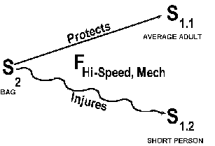
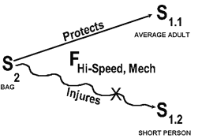
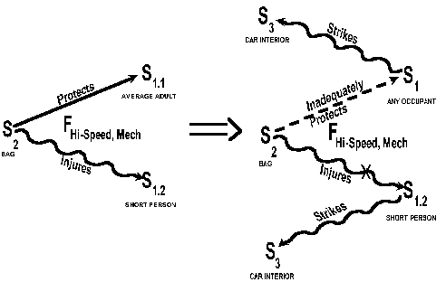
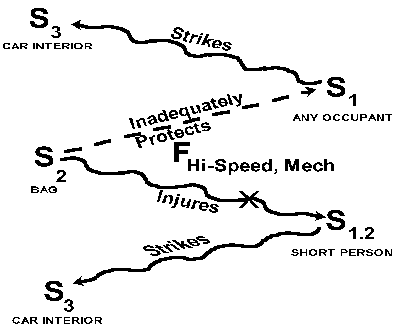
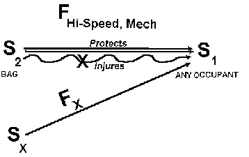
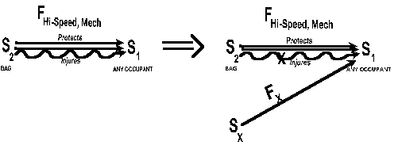
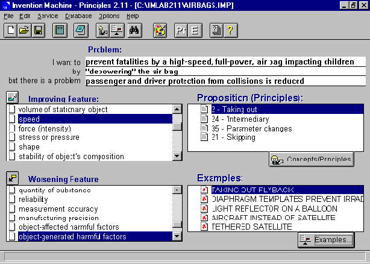
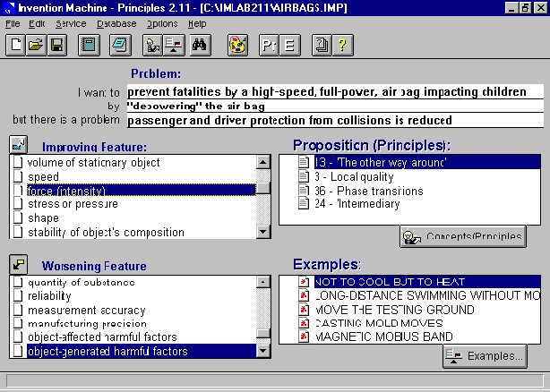
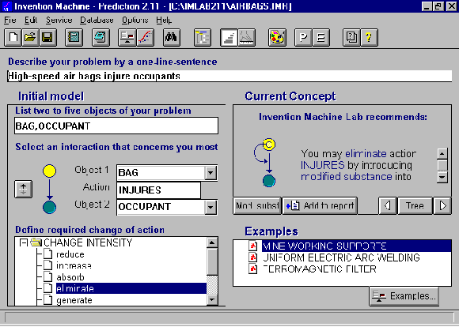

Tel: (916) 692-1944; Fax: -1946; E-mail: headguru@oro.net
The following problem focuses on a critical situation plaguing the automobile industry - child fatalities caused by air bags, which are meant to save lives rather than take them. Dr. Kowalick and his company have completed a special "white paper" for the air bag and automobile industries, for health, safety, insurance and special interest groups (e.g., parents), and for legislators and government agencies involved in this problem. This report is a synopsis from that "WHITE PAPER: AIR BAG FATALITIES AND DESIGN TRADEOFFS." The premise of the white paper is that "design tradeoffs are not necessary; what is needed is a next-generation design that makes no compromises on occupant fatalities, and which in fact, provides far better protection to all occupants of air-bag equipped cars and light trucks." In this synopsis of the white paper, Dr. Kowalick applies the TRIZ/ARIZ approach to generate breakthrough-level air bag system designs today - instead of having to wait years for so-called "smart designs" which are far from ready for production. Besides using an informal, relaxed version of ARIZ - Algorithm for the Solution of Inventive Problems, Dr. Kowalick makes use of inventive software for designers: TechOptimizer for problem clarification, definition and prioritization, and Invention Machine Labs for generating solutions. Dr. Kowalick's company, RLI, provides consulting and training for industry on TRIZ, ARIZ and Inventive Software, and also works with leading-edge company teams to rapidly develop next-generation systems. ARIZ is one of several tools used in the approach towards problem-solving called TRIZ. TRIZ stands for the Theory of the Solution of Inventive Problems. Research results on specific air bag design solutions are not presented in this paper, but are available in the white paper. The white paper for industry can be purchased through RLI. Additional copies of this paper are available for purchase through Break Through Press in Sacramento, California, (916) 974-7755.
Frontal Impact Automobile Collisions. Frontal impacts are the number one fatality and injury mode of automobile crashes, resulting in approximately 65 percent of all fatalities and 65 percent of all injuries. For example, in 1994, on average about 37 drivers died each day, while 10 front-seat passengers died each day, all as a result of frontal crashes. The use of seat belts, backed up by air bags for both the driver and passenger, has saved thousands of lives. At the same time, air bags are taking the lives of a smaller, although significant number of occupants - short-statured people and children - involved in relatively low speed collisions.
The most recent estimate: if all passenger cars and light trucks on the road today were equipped with current-design air bags, more than 3000 lives would be saved each year, as compared to a no-air-bag fleet (assuming current seat belt usage by occupants).
On the driver's side, 616 seat-belted drivers and 1,686 unbelted drivers would be saved, for a total of 2,302 drivers' lives saved. Twenty-five (25) drivers, however, would be fatally injured by drivers-side air bags.
On the passenger's side, 223 belted and 491 unbelted passengers would be saved, for a total of 714 front seat passengers' lives saved. However, this figure would be offset significantly by air-bag caused fatalities of children sitting in the front seat. If today's rates of child fatalities were experienced under the condition where all cars and light trucks were fully equipped with air bags, 128 children would be killed annually by the air bags themselves (this assumes no air bag technology improvements - simply using currently designed air bags). These 128 child fatalities include 90 children facing forward, and 38 infants in rear-facing child restraints.
The "bottom line" is that, with all U.S. cars fully equipped with air bags (drivers' and front seat passengers' sides), 3041 lives would be saved by air bags, and 153 fatalities would be caused by air bags. Or, for every twenty lives saved by air bags, one fatality will be caused by air bags. This is a "compromise" that no nation, no legislator, no automaker, no air bag producer, no driver or passenger, and no air-bag design engineer will accept or tolerate.
Air bag technology and designs of the future can - and must - lead to significantly larger numbers of car occupants surviving, no matter at what speed an automobile collision occurs. Furthermore, there must be no undesirable side effects associated with these future designs. The current air bag problem - the problem that has been intensely covered by the press for the last half year or more - relates to the air bags themselves directly causing fatalities.
Product History and Discussion. Air bags are designed to save lives and reduce or prevent bodily injury by inflating when cars are involved in moderate to severe frontal and near-frontal crashes. Air bags work best when used together with lap and shoulder safety belts. This is because the belts hold individuals in place long enough to allow the air bag to fully inflate before the individual's body contacts the bag. In particular, seatbelt pre-tensioners and adjustable-height seatbelts further prevent individuals from (dangerously) moving forward before the belts have a chance to tighten up. The lower limit of deployment of air bags is a frontal crash equivalent to hitting a solid wall at speeds above approximately 10 miles per hour (but in some instances air bags have been known to deploy at even smaller speeds upon impact).
Air bags were designed to best protect the average male - 5'9", 165 pounds - also to shield a person who is not wearing a seat belt. To restrain such a person in a crash, the bag has to deploy with great force, in approximately three one-hundredths of a second. To protect but not cause injuries, the bag has to fully inflate before an individual hits the bag. A recent study found that both driver side and passenger side air bags were less effective for women than for men. Air bags reduced male fatalities from crashes by 14 percent, while reducing female fatalities from crashes by 9 percent, the study said.
There are currently about 35 million cars and light trucks on the road with air bags, and about 15 million of these also have passenger side air bags. Air bags are now a legal requirement on the driver side and there will be a legal requirement for passenger side airbags for model year 1998 for cars, and for model year 1999 for light trucks.
In a really bad crash, belted front-seat drivers and passengers can still move forward enough to hit the steering wheel, dash panel, or windshield. So air bags act as part of a safety system, serving as a "buffer" between the occupant and the steering wheel or windshield.
Air bag system functioning begins when crash sensors located in the front of the vehicle detect sudden high-rate deceleration. These sensors then electronically trigger an inflator module which, through a rapid chemical reaction of a chemical explosive (sodium azide, combined with other ingredients in such a way that it burns more slowly, like a propellant) produces nitrogen gas that begins inflating the bag. The bag breaks through its covering and inflates to a "diameter" that exceeds the steering wheel diameter, and a width/thickness of about twelve inches. The impact sensing and inflation processes happen in less than 1/20th of a second. After inflation, the bag begins deflating, and is completely deflated within 1/2 second after deployment.
Upon a frontal impact, vehicle occupants begin moving forward in response to (1) pre-impact braking and/or (2) vehicle deceleration as a result of impact. Unrestrained front-seat occupants move forward in a fraction of a second, striking the steering wheel, dashboard or windshield. An air bag has to inflate very quickly, faster than an eye-blink, in order to position itself to act as a "buffer" or spring for occupants in higher-speed crashes..
To accomplish all this for adult and smaller occupants, careful control of the air gas-pressure inside the bag is crucial. This is accomplished by controlling (1) the rate of release of gas from the sodium azide reaction, and (2) the rate of loss of gas through vents or through pores in the air bag fabric. The air bag and the occupant's body are coming together at a very high net speed. If the vents in the air bag don't allow enough of the gas to escape as the body hits it, the air bag acts like a rigid wall, failing to absorb enough of the body's "moving" energy, causing serious injury. On the other hand, if the vents in the air bag allow too much gas through, the cushioning action of the air bag is absent, and the body moves through the bag, striking the vehicle interior, again causing serious injury. The venting action must be delicately balanced for the air bag system to correctly function.
Although air bags have deployed 200,000 times or more, and saved more than 1700 lives since they started being installed in vehicles, they have also taken lives. Thirty-two (32) children and 20 adults have been killed by air bags, as of January 9, 1997 (according to the National Highway Traffic Safety Administration - NHTSA).
As early as 1969, a research paper by General Motors Corporation, noted that "a small child close to an instrument panel from which an air cushion is deployed may, in our present estimation, be severely injured or even killed." Nevertheless, in 1984, an NHTSA investigative report still concluded that the potential benefits of air bags far outweighed their potential harm to infants and small children. That report referred to the small-child problem as a "theoretical potential that is more than offset by the overall crash protection afforded children."
Children often end up crashing into the air bag as it is inflating, and they receive much greater force than that required for crash protection. Theoretically, children would be protected if (1) they are wearing their seat belts; (2) they are sitting back in their seats; and (3) their seats are pushed back to the farthest position. The problem appears to be that children typically squirm, wiggle out of shoulder belts, play with the radio, and - wanting to see better - sit toward the front of the seat. During a crash, they have less control of their bodies than a typical adult would have. Children also have proportionately larger heads, making them "jackknife" forward during pre-crash braking, considerably more than an adult does. They typically cannot brace themselves during pre-crash braking, because their feet don't touch the floor.
Infants in rear-facing seats are under subjected to more hazards. They are too close to the deploying air bag. This means that they are exposed to extremely high forces. Nine (9) of the child fatalities involved rear-facing infant seats. It is believed that these were unbelted or improperly belted. Wearing seat belts appears to be the best way for adults to protect themselves from the force of an air bag. The best way to protect children under 13 is to buckle them (with a properly secured lap and shoulder belt) in the rear seat.
Air bags need time to fully inflate before contacting occupants, but they also need to inflate fast to prevent forward motion of occupants. Sudden air bag inflation injures occupants who are too close to the bag during deployment. This does not happen as frequently with properly restrained occupants. Most child fatalities attributed to air bag use fall into one of two groups: (1) infants riding in rear-facing infant seats, thereby placing them very close to the air bag at the time of deployment; and (2) older children riding forward-facing without any type of restraint, thus allowing them to slide forward during pre-crash braking so that they are too close to the air bag when it deploys. Similarly, a majority of fatally-injured (by the air bag itself) drivers are short-statured women who moved the driver's seat forward. More than half of the fatally-injured drivers were not using any type of restraint.
Parents whose children have been killed by automobile air bags say that (1) the public is not getting the word that children up to age 12 should ride in the back seat (five year old Frances Ambrose was knocked unconscious by an air bag during a low speed crash in Nashville, Tennessee. She never woke up. She was properly using her lap and shoulder belt.); (2) new safety warnings do not go far enough; (3) domestic automakers have shown lukewarm support for the new (labeling) program, and that the parents' group are completely disheartened by the industry's inability to deal with the problem; and (4) that laws such as those in Germany, Switzerland and Austria, requiring children under 13 to ride in the back seat, should be enacted in the United States. Beth Sanders, a mother whose child was a fatal air bag victim, said that "Children are being buckled in the front seat ... each one of those children are at the risk of being killed instantly ..."
Smaller individuals - men as well as women - are most at risk as drivers, because they have to get closer to the steering wheel (where the air bag is located) to be able to reach the car's pedals. Car consultants say that cars are optimally designed to fit people who are between 5'5" and 5'11" tall, although it does matter "how a person is short" - people with a long torso and short legs have the most risk. Nevertheless, even larger individuals who sit too close to the steering wheel are in danger. The American Automobile Association cites 12 inches as an (estimated only) optimal distance as clearance between a driver and the steering wheel. Public Citizen, a consumer group whose head formerly ran the NHTSA, says 6-10 inches. So who and what should the public believe? Everyone thinks that sitting 2-3 inches from the steering wheel to be quite dangerous, should the air bag deploy. The further away the driver, the greater the margin of safety. There is a point at which a driver's legs will not reach the floor pedals, and this point is one of the factors that dictate the driver/steering wheel clearance. One solution to this problem is to purchase and attach approved "pedal extenders" to the pedals. Pedal system design, however, can contribute to major accidents (unrelated to the air bag system), so it is important for consumers to not "rig up" pedal extenders that could contribute to accidents.
Automakers say that present air bag designs were dictated by government requirements requiring air bags to catch an unbelted, 170-pound male dummy in a crash test into a wall at 30 miles per hour. This requirement, they say, has made the air bag too forceful for children and smaller women to withstand. The automakers also say that they are prevented from installing less forceful air bags because of these requirements.
Senator Dirk Kempthorne (Iowa) stated that NHTSA was now administering a standard that "does harm if not death to children." The Senator cited a hearing over ten months ago in which NHTSA officials testified that 15 children had been killed by air bags. Since then, he noted, the death toll had more than doubled. In response to the Senator's raising the accusation/question that air bags were "killing more children than they are saving," Mr. Martinez, head of the NHTSA, acknowledged this was true, and that his agency recently put out two proposals for (1) less forceful air bags, and (2) airbags that can be disconnected by consumers using cut-off switches, if necessary. Additionally, the agency has ordered the use of warning labels for those who use air bags.
Automakers had unveiled a proposal as early as August, 1996, to allow them to design air bags that deploy with as much as 30 percent to 40 percent less force. The car makers are backed strongly by the Insurance Institute for Auto Safety, who complained that NHTSA's initial responses to the problems - essentially, more warning signs - was an inadequate response.
Air bags were meant to protect adults rather than people of small stature and children -- according to Mr. Iansiti, Michigan Office of Highway System Planning coordinator.
Another possible change would be to replace today's ordinary air bags with "smart bags." These "smart bags" would make inflation-rate decisions, depending on the person in the seat, and on the severity of the crash. One such smart bag features "dual-inflation": the ability to deploy two levels of force, depending upon whether the crash is a high-speed or low-speed event. Iansiti said that, although smart bags are a good idea, it would take a considerable amount of time to fully develop them.
Ralph Nader's Center for Auto Safety (he is the Founder) seeks bags that will not inflate for crashes lower than 10 miles per hour. The Center points out that all fatalities and serious injuries caused by air bags were in low-speed crashes, and that in high-speed crashes, either the air bag protected people, or they would have died anyway. Most current-design manufacturers have chosen between 12 to 15 miles per hour as the "trigger point" for air bag deployment, but actual crash records indicate that some air bags deploy even at collision speeds as slow as 7 miles per hour.
"Depowering," says the Center's director, Clarence Ditlow, "offers advantages to drivers, but if they're made safe for children, they won't be powerful enough to take care of that average male in high speed crashes who isn't wearing his seat belt." He further states that "Smart bags could gauge the weight of a person, speed of crash, and whether someone is wearing a seat belt."
On Monday, December 30, 1996, the federal government conceded that its proposed (new) air-bag rules could save the lives of 83 children a year, but cost up to 1,200 adults' lives. This is the first time that the NHTSA provided a statistical estimate of the trade-off it sees in making "safer" air bags. These estimates assume dual air bags in all cars and trucks, and assume that only 2/3rd of Americans buckle up.
In its Safety Standard on Occupant Crash Protection (49 CFR Part 571 [Docket No. 74-14; Notice], RIN 2127 - AG59), NHTSA states : "There is a possibility that . . . this rulemaking . . . could also result in an even larger number of unbelted occupants not being saved by air bags." NHTSA is also considering a petition by Anita Glass Lindsey to specify the use of a crash dummy representing a small-statured female in testing the performance of safety belts and air bags.
The new rules would reduce the 200-miles per hour inflation speed of new-vehicle air bags by up to 35 percent, and allow air bag disabling by owners (mechanics). Bags inflating at 200 miles per hour can snap the neck of a child or small adult riding in the front seat. Lower powered bags would be used until "smart" air bags are developed. Smart bags can (theoretically) sense a seat occupant's size and adjust the force accordingly.
All air bags are not the same. They differ in their forcefulness by more than 100 miles per hour - according to the last 1990 government test results. They also differ in the angle of deployment. Some are recessed, to increase the passenger or driver clearance, while others are not. The Auto Safety Center suggested a possible recall in the case of air bags in the Ford Taurus, Chevy Corsica and Chrysler mini-van, because of their statistical over-representation among air-bag caused injuries and fatalities. But NHTSA said that no available information suggests that one make and model of car is worse than another. This NHTSA statement was made, however, prior to the safety center's petition.
In Japan, Toyota and Nissan announced their intention to develop smart air bags that adjust deployment speed according to passenger weight. The Japanese Manufacturers Association says that in Japan, the rate of passenger car air bag rose from 6% in 1994 to 34% in 1995, to (an expected number of) 60% in 1996. They fear that higher air bag use in Japan might lead to accidents like those reported in the United States.
The less powerful U.S.-proposed air bags will be more effective than current air bags if occupants are belted - so says the government. However, the NHTSA also says that the less powerful air bags would provide less protection to unbelted adults in severe crashes, and will not "entirely" eliminate risks to children. The agency says that less powerful bags might only save 39 to 83 of the 128 children the government estimates each year would be killed if no changes are made to current air bag designs.
Automakers are pushing for "final" rules by February 15, 1997, if they are to get safer air bags in the first 1998 models rolling off the assembly line next spring. President Clinton endorsed the current new rules in a December, 1996 radio address. The public has until February 5th to comment on the new proposals.
About the tradeoff: Chuck Hurley, spokesman for the National Safety Council, a consumer-safety group, said: "We have a higher obligation to protect children than unbelted adults. Children can't protect themselves, and (they) depend upon parents, care-givers and the government to protect them."
The National Center for Policy Analysis conducted a 1993 study involving post-1989 model year vehicles, and reached the following (paraphrased) conclusions:
Discussion of the Problem Situation. As in most complex problems, the specific problem for the air-bag-caused fatalities situation is not yet well defined. Something obviously has to be done about the significant number of child fatalities caused by air bags. This is both a real and an emotionally charged issue. No one doubts that the presence of air bags saves lives of drivers and passengers, and no one wants to intentionally degrade the life-saving performance of air bags - even temporarily - in order to resolve a disastrous side effect of using air bags. Some "solutions" have already been suggested by interested parties. Pressure from special interest groups demands solutions as soon as possible. Yet there is considerable uncertainty and lack of action. Why? Is this problem any different from other complex problems?
The missing element in the air bag problem is a strong sense of problem definition - defining the right problem to work on. The real problem is that there is a lack of a strong problem definition. What is the specific problem to be addressed and resolved? What course of action should be taken? What are the problem constraints? In the beginning stages of problem solving, it is easy to make wrong moves and bad decisions. With a lack of a strong (specific) problem definition, delay and indecision are common.
A useful approach is to employ functional analysis. Functional analysis is a process that examines a technical system from the viewpoint of its functions, considering the relative priorities and costs associated with each system function.
The author's firm, Renaissance Leadership Institute, applied functional analysis to the air bag system problem using TechOptimizer, a software package that organizes the investigative approach to problems, simplifies the technical system involved, and leads problem-solvers, designers and developers towards the specific problem - the key problem - to pursue first.
The specific steps used with TechOptimizer are not included in this report. However, the results of its use are presented in the form of (1) a more defined "problem situation" (see next section) and (2) a specific "functional problem statement" (see the section below entitled "Problem Analysis").
The author composed a detailed White Paper: Air Bag Fatalities and Design Tradeoffs for examination by air bag and automobile industries, appropriate government agencies, and overseeing legislative groups. The present report is a synopsis of that detailed study. The detailed study includes several alternative solutions to the air bag dilemma - solutions which make no compromising tradeoffs on human lives, whether they be the lives of drivers or adult passengers or child passengers. These solutions were generated using the TRIZ approach (TRIZ is a foreign acronym for "Theory of the Solution of Inventive Problems").
Problem Situation. Applying TechOptimizer to the information in preceding sections of this report leads to the specific problem situation. Table 1 (see next page) lists nine air-bag system "objects" pertinent to the air bag problem. These objects are listed (1) in the first column of the table, and (2) along the top of the table. The table contains 28 functional statements, of which 12 are useful functions and 16 are harmful functions. Some functions are the same as, or similar to, other functions. Using Table 1, functional statements are read from the left column, horizontally to an appropriate cell, and upwards to the top row of the table. For example, a "harmful" function is "REDUCED POWER AIR BAG INADEQUATELY PROTECTS ADULT PASSENGER."
The two interacting objects which really define the problem-at-hand are "FULL POWER AIR BAG" and "CHILD PASSENGER or SHORT STATURED DRIVER." The harmful interaction verb is "INJURES." Careful modification of terms leads to the following problem situation:
Air bags expand so rapidly and forcefully that, in striking the body under certain conditions, they cause fatal injuries to children and short adults. What can be done?
Problem Analysis. The objects involved in the problem situation are the bag and an occupant (child or adult). Two locations are considered as problem zones: the location of the driver, and the location of the front passenger. The useful interaction is described by the verb "protects," and the harmful interaction by "injures." The S-Field model showing these functions is expressed symbolically below:

Goal. The primary "useful" function between the air bag and the (average adult) occupant is: "Bag Protects Occupant;" this is indicated by an arrowed, continuous line between the air bag and an average adult (driver or passenger). The wiggily-arrowed line in the S-Field model represents a "harmful" function between the air bag and the (short person driver or child passenger) occupant: "Bag Injures Occupant." The letter "S" stands for "substance." S1 is the substance (or object) being changed, or modified, or detected or otherwise worked on in some way. S1 is the occupant, whether he is an average adult (as in S1.1, or a short person/child (as in S1.2). S2 is the substance (or object, or technical system) that changes, modifies, detects or otherwise works on S1. S2 is the air bag.
The "field" F represents the type of energy that makes the harmful interaction possible. For this problem, it is a high-speed, mechanical (pneumatic/kinetic) field that causes the air-bag to be accelerated to a high speed at which it exerts a strong force on the body upon contact. An excessively high-speed, forceful air bag causes fatal injuries (especially to children, short passengers, non-belted occupants, or to anyone sitting too close to the source location of the air bag).
The design goal is to eliminate this harmful (fatal) function. Elimination of a harmful action is indicated by "crossing out," using the letter "X," the wiggily interaction line between the air-bag and the short passenger, as shown below.

A design modification is probably required to eliminate the harmful function, "Bag Injures Occupant." The approach called TRIZ has been applied to this problem; the results of its application are high-level, conceptual design solutions in the form of revolutionary, new air bag systems.
Discussion. As described in the "Product History and Discussion" section, the U.S. Government is acting to resolve the air bag problem by reducing the "power" of the air-bag (the power defines the air bag's rate of inflation and forcefulness). Reducing the "power" obviously reduces the probability of fatal consequences from the air bag itself.
This "solution," however, raises a further concern: decreasing air bag power lowers the protection level of air bags in higher-speed collisions.
Such a situation is known as a "technical conflict:"
"If the power level of the air bag is lowered in order to reduce occupant fatalities caused by the air bag itself, this lowering of power leads to an increase in the level of fatalities caused by higher-speed collisions."
This "conflict" is shown below as an S-Field Model, with the initial problem situation on the left (higher powered air bag saves lives but injures some occupants, leading to fatalities), followed by a "transformation" symbol indicated by a double-lined arrow, and the suggested "solution" that leads to yet another technical conflict on the right (lower powered air bags no longer seriously injure certain occupants, but they also do not offer adequate crash protection to occupants involved in higher-speed collisions).

S3 represents those parts of the car interior (e.g., windshield, dashboard, steering wheel) that the inadequately protected occupant will strike in a higher-speed crash, just because of the lower-powered air bag. The dashed interaction line indicates "inadequacy" of the crash protection function for any frontal occupant in the automobile, while the wiggily lines on the right indicate injury to occupants because of contact with the car interior (windshield, dashboard, steering wheel).
The laws of physics do not lie. If air bag inflation velocity is lowered, taking more time for it to inflate, more occupants will die in higher-speed accidents. If the air bag gas quantity or pressure are reduced, the "buffering" action of the air bag will be reduced, and more occupants will die in higher-speed collisions. To pronounce that "It's OK to sacrifice lives due to inadequate protection of occupants in higher-speed collisions" is poor management, poor customer consciousness, and poor engineering. Something has to be done about this problem - something other than tradeoff "solutions" that compromise occupants lives.
The Technical Conflict. The S-Field model of the situation just discussed represents a "classical" technical conflict: If something is done (improving feature) to improve one thing or one situation, another thing or situation gets worse (worsening feature). In the present case, if the speed/power of the expanding air bag is lowered (improving feature) to reduce fatal effects of higher-powered air bags on certain occupants, then the air bag's main function of protecting occupant's bodies from injury is degraded (worsening feature). This technical conflict is modeled below.

Tradeoffs and Compromises. "Tradeoff" and "Compromise" thinking is the ordinary, traditional way to solve problems. It means "giving something up." Most often, "tradeoff" designs compromise a little (or quite a bit) on two or more functions. When the compromising involves human lives, it is even worse. The results of engineering compromises are less than satisfactory. The tradeoff and compromise mentality reflects an inability to "think outside the ordinary box."
A major contributor to compromise thinking is the way that problems are formulated - as a conflict between two objects, or two functions, or two features. A far better starting point for formulating problems is expressing the problem or design challenge as a "physical contradiction."
Physical Contradictions. Framing a problem as a physical contradiction requires selecting one part of a technical system (usually a part that is to be changed, modified or redesigned), and assigning diametrically opposing requirements or properties or characteristics to it. For example, establishing the physical contradiction for the air bag problem begins with selecting the "air bag" as the object, as follows:
"The bag must be high-speed (to save occupants' lives in more serious collisions), and low-speed (to not injure passengers upon bag contact during bag expansion)."
This physical contradiction is used as a design-requirement guideline. Compromises are not acceptable. The designer must go "out of the conceptual box" to find air bag system designs that will satisfy this contradiction.
Two Important Contradictions. Problems that include technical conflicts are known as "inventive problems." Inventive problems are higher-level problems, and their solutions are higher-level solutions. Technical conflicts inherent in an inventive problem can be expressed in at least two different ways. It is enlightening to do this when solving problems. For the air bag problem, these two different conflicts can simply be called Conflict #1 and Conflict #2:
Conflict #1. If the air bag speed is very high, the occupant's chance of being protected from injuries as a result of a collision are significantly enhanced, but certain passengers will receive fatal injuries from being impacted by the air bag itself.
Conflict #2. If the air bag speed is lower, even very short occupants will not be fatally injured by air bag impact, but statistically more occupants of vehicles will be fatally injured as a result of more severe collisions.
Selection of Conflicts. Given the two forms of conflicts, the designer and problem-solver now selects the conflict to resolve. Because the primary function of an air bag is to save the lives of occupants from collisions (light, moderate and severe), Conflict #1 is selected as the conflict to be resolved. The next step is to develop a design vision, in the form of the "Ideal Final Result."
Ideal Final Result (Design Vision). "To design a very high-speed air bag that protects all types of occupants from the hazards of all levels of frontal collisions, with the air bag itself causing no adverse effects to any type of occupants. This design solution should raise no new problems, should require minimal system changes (use of existing system resources is encouraged), and should be as good or better at its primary function than the existing air bag system design."
Solution (the "X" Element). There is an "X" element which, when applied to the air bag system, allows for a very high-speed air bag that causes no injuries or adverse effects to any type occupants, generates no further problems, and does not further complicate the air bag system. If possible, "X" should come from existing system resources.
Note: The "X" element could be an "object," but it does not have to be an object. It could be a field, but it does not have to even be a field. "X" represents some change, modification, or varying of the system. It could, for example, be a change in temperature, or a "change of state" of some object in the system, or even in the environment. It could also be a dimensional change in an object, or a change of an object's properties, etc. It is important to state just what "X" should do to the system, or what it should do in the system (e.g., what it should support, or contain, or eliminate, or improve, or offer, etc.).
Solution Model. Show the solution model that reflects the solution to the selected Conflict #1.
Conflict #1 is: "If the air bag speed is very high, the occupant's chance of being protected from injuries as a result of a collision are significantly enhanced, but certain passengers will receive fatal injuries from being impacted by the air bag itself."
And the "X" element solution statement is: "There is an 'X' element which, when applied to the air bag system, allows for a very high-speed air bag that causes no injuries or adverse effects to any type occupants, generates no further problems, and does not further complicate the air bag system. If possible, 'X' should come from existing system resources."
The Solution Model is shown below.

Model of the Transformation.
For Conflict #1, before the solution model shown above, the air bag speed is very high (indicated by two arrow-lines), and this "excessive" bag speed resulted in the bag's injuring some occupants. This is reflected in the left-hand model below, followed by a transformation symbol, and the solution model. Altogether, these symbols represent the "model of the transformation."

System Resources. In order not to complicate the new air bag design, we stated above that the "X" element should come from existing system resources. Therefore it is a good idea to make a list of these resources (below).
System Resources The Interacting Objects
Surrounding Objects
Fields
Among these system resources, the symbol (*) indicates primary resources that are associated with the interaction under consideration. There are two primary resource objects and two primary resource fields.
Making the Solution Statement More Specific and More Demanding. The solution statement is rewritten by replacing the word "X-element" by the four primary resources marked by an asterisk (above), one at a time. This leads to one generic, and four more specific solutions.
There is a purpose in rewriting the solution statements with the "X-element" being replaced by the key objects and actions relating to the interaction. It is to force the designer to consider solutions that come from within the system: "system resources." Such solutions tend to be elegantly simple. Each of the four solutions described above provide "idea seeds" for conceiving and developing a next-generation air bag system that satisfies the design vision as expressed by the ideal final result:
"To design a very high-speed air bag that protects all types of occupants from the hazards of all levels of frontal collisions (i.e., collisions at both lower and higher speeds), with the air bag, during expansion, causing no adverse effects to any type of occupants. This design solution should raise no new problems, should require minimal system changes (use of existing system resources is encouraged), and should be as good or better at its primary function (protecting occupants during from the adverse effects of collision) than the existing air bag system design."
Specific Solution(s). There exist several "breakthrough" approaches for making the above solution statements even more specific (i.e., for generating design details of specific air bag systems that satisfy the ideal final result).
Standard Solutions. Many technical problems can be expressed as S-Field models that have known generic solutions. These generic solutions are also expressed as S-Field Models, and have been previously catergorized - based upon a study and analysis of the global patent collection. The author has used these previously-known, "standard solutions" to create several conceptual air bag designs.
There are five different "classes" of standard solutions. Class 1 Standard Solutions are for (A) creating functions/interactions when there is an incomplete S-Field Model (to have a function, three elements are required in general: S1, S2 and a Field); and (B) Breaking up or destroying unwanted interactions. Class 2 Standard Solutions are for enhancing the performance of system functions that already exist. Class 3 Standard Solutions offer further enhancement and system simplification, according to the laws of evolution of technical systems. Class 4 Standard Solutions are a special class dedicated to measurement and detection problems and systems. Class 5 Standard Solutions consist of rules for applying Standard Solutions and is dedicated to system simplification.
For really complicated problems, the Standard Solutions approach assists designers in conceiving high-level design concepts roughly 20% of the time. The Standard Solutions approach is discussed in detail in the White Paper, but will not be further addressed here. It takes advanced training in TRIZ in order to effectively apply Standard Solutions to solve a problem.
Technical Conflict Resolution with Inventive Principles. Given a technical conflict such as
"Depowering the air bag prevents air-bag caused fatalities for some children and short adults, but occupant protection is compromised, especially in higher-speed collisions,"
There are universal "inventive Principles" that can be used to resolve the conflict, and create a breakthrough air bag design, without compromising on or trading off occupant fatalities. These inventive principles are quite specific to the type of conflict represented by the problem.
One of the expert systems in The Invention Machine Lab software package is called "Invention Machine Principles." This is based upon the TRIZ conceptional approach. The author used this software to resolve the conflict expressed above. The software prompted the author to apply seven inventive principles to the problem, to generate next-generation air bags. This inventive process is described in Attachment A: Example of Application of Invention Machine Principles Software to the Air Bag/Child Fatality Problem.
Predicting the Complete Evolutionary Path of Next-Generation Air Bag Systems. All technical systems, including air bag systems, follow a predictable path of technical evolution. This technology forecasting capability is a part of the TRIZ approach, and it is also available as software. The Invention Machine Labs software includes this approach as an expert system called "Invention Machine Prediction."
The author used this approach to generate 48 possible generic design prompts for conceiving specific, next-generation air bag designs. The 48 possible generic design prompts are included in Attachment B. Example of Application of Invention Machine Prediction Software to the Air Bag/Child Fatality Problem.
Specific air bag designs stemming from these various solution approaches are presented in the White Paper for the Air Bag Industry, etc., referred to above.
~ ~ ~ ~ ~ ~ ~ ~ ~ ~ ~ ~ ~ ~
BIBLIOGRAPHY
Just the Facts About Air Bags, Michigan Congress of Parents & Teachers (last modified: Monday 13-Jan-97); Questions: webmaster@michiganpta.org
Ford Increases Contribution to Air Bag Safety; Pushing Aggressively for Technology Advances: Ford News Briefs Weekly News Digest, January 8, 1997
Air Bag Information: NHTSA People Saving People (web site)
NHTSA Public Workshop on Air Bags (announcement of February 11/12, 1997 workshop)
Air Bag Deactivation, NHTSA notice in Federal Register on January 6, 1997
Manual Cutoff Switches for the Passenger-Side Air Bag, Final Rule, in Federal Register, January 6, 1997
Air Bags to Inflate Less Aggressively, Notice in Federal Register on January 6, 1997. Public comments solicited before February 5, 1997.
Federal Motor Vehicle Safety Standards: Occupant Crash Protection, 55-page document (downloaded from the web in January, 1997)
The figures on the following page illustrate the application of the Invention Machine Principles expert-system software to the air bag/child fatality problem.
The expressed "problem goal" is written in the first line as: "prevent fatalities by a high-speed, full-power, air bag impacting system."
The second line asks for one possible solution (using some "improving feature"). The solution chosen is the one proposed by NHTSA: "depowering the air bag."
The third line is for any objection, or problem, or potential problem raised by the preceding "solution" (which is related to a "worsening feature": "passenger and driver protection from collisions is (generally) reduced."
Under the list called "Improving Feature," there is a menu of 39 possible engineering and technical "features" or "parameters." The user must select the feature from this menu, that most closely matches what occurs when moving from line one to line two on the software pages shown. In other words, what feature(s) was changed in depowering the air bag so that children's lives would be saved? Two features come to mind: air bag speed, and air bag force. These are selected (shaded in) as "improving features" on the next page.
Similarly for the "Worsening Feature": what feature might get worse when the above improving features are implemented? The feature that comes to mind is "object-generated harmful factors." I.E., if the air bag is the "object," and we changed this object (by reducing its speed and force), these reduced characteristics of the object itself (the air bag) generate additional harmful factors (the degree of passenger and driver protection during collision is most likely reduced - especially for higher-velocity collisions).
The software recommends using 7 inventive principles to provide breakthrough solutions to the air bag/child fatalities problem: (1) Taking Out; (2) Intermediary; (3) Parameter Changes; (4) Skipping; (5) The Other Way Round; (6) Local Quality; and (7) Phase Transitions. Applying these to the air bag/car occupant system results in several breakthrough air bag system designs, satisfying the dual requirement that (1) the air bag protects occupants involved in higher velocity collisions, and (2) the air bag itself causes no injuries to occupants.


The solutions emerging from the use of the "Inventive Principles" approach generally satisfy the following criteria:
Details of new, specific, breakthrough designs generated from applying TRIZ and Invention Machine expert system software to this problem are presented in Dr. James Kowalick's White Paper on this subject.
The Prediction mode of Invention Machine Lab software was applied to the air bag fatality problem to produce forty-eight generic solution prompts. A picture of the Prediction-mode screen is shown below, followed by the solution prompts.
